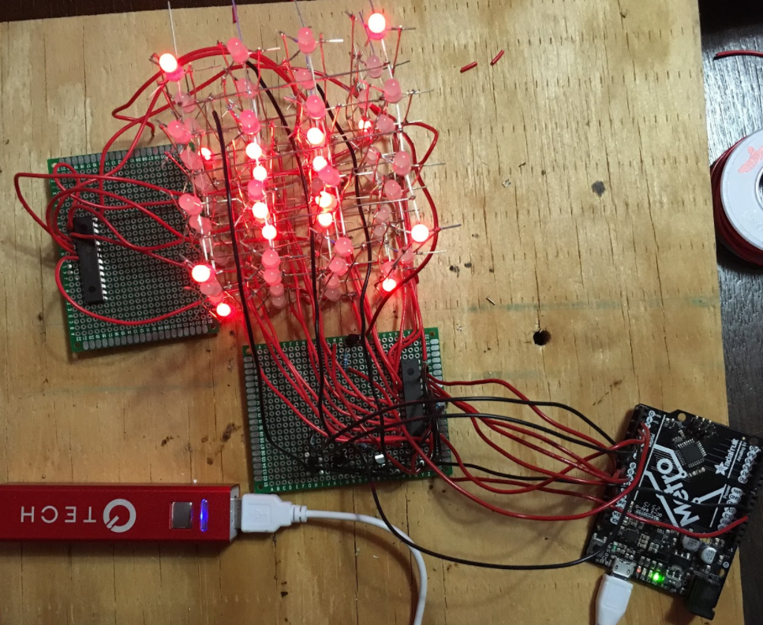

As the final project for my embedded systems class, I built a 4x4x4 RGB LED cube that would play animations according to current weather conditions. This provided great practice at using internal timers on the NXP microcontroller since the cube rendered using a scanning method and persistance of vision. The microcontroller would periodically poll the serial port to request new conditions from the Python script. Once built, the cube was first tested using an Arduino before switching to the NXP controller since the Arduino has many more convenience methods.
